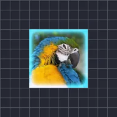

Bagliore interno

Aggiunge un bagliore lungo i bordi interni delle parti opache del livello.
Impostazioni
| Impostazione | Tipo | Intervallo | Predefinito |
|---|---|---|---|
| Dimensione | Numero | Da 0 a 300 | 30 |
| Intensità | Numero | Da 0 a 4 | 1 |
| Colore | Colore | – | #FFFFFF |

Aggiunge un bagliore lungo i bordi interni delle parti opache del livello.
| Impostazione | Tipo | Intervallo | Predefinito |
|---|---|---|---|
| Dimensione | Numero | Da 0 a 300 | 30 |
| Intensità | Numero | Da 0 a 4 | 1 |
| Colore | Colore | – | #FFFFFF |